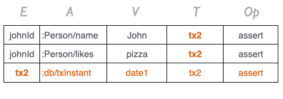
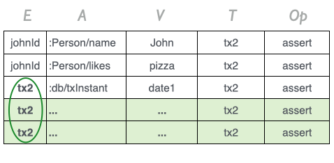
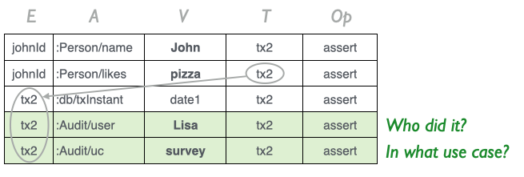

Molecule has 4 basic transaction operations:
saveinsertupdateretractIn Molecule we can populate a molecule with data and save it:
Person.name("John").likes("pizza").age(24).save
This will assert 3 facts in Datomic that all share the id of the new entity id johnId that is automatically created by Datomic:
johnId :Person/name "John"
johnId :Person/likes "pizza"
johnId :Person/age 24
Type-safety is guaranteed since each attribute only accepts values of its defined type.
All transactional operators have an asynchronous equivalent. Saving data asynchronously with saveAsync uses Datomic’s asynchronous API and returns a Future with a TxReport.
Here, we map over the result of saving asynchronously:
// Map over a Future
Person.name("John").likes("pizza").age(24).saveAsync.map { tx => // tx report from successful save transaction
// (synchronous get)
Person.name.likes.age.get.head === ("Ben", "pizza", 24)
}
Or we could defer the resolution of the Future
val futureSave: Future[TxReport] = Person.name("John").likes("pizza").age(24).saveAsync
for {
_ <- futureSave
result <- Person.name.likes.age.getAsync
} yield {
// Data was saved
result.head === ("Ben", "pizza", 24)
}
For brevity, the following examples use the synchronous save operation.
We can even save related date in the same operation
Person.name("John").likes("pizza").age(24).Home.street("5th Avenue").city("Boston").save
In this case, 6 facts will be asserted for the entity of John. A :Person/home ref attribute will resolve to the value of a new Address entity with id addrId and thereby establish the relationship from John to his Address:
johnId :Person/name "John"
johnId :Person/likes "pizza"
johnId :Person/age 24
johnId :Person/home addrId
addrId :Addr/street "5th Avenue"
addrId :Addr/city "Boston"
And we could go on with further relationships…
Cardinality many attributes like for instance hobbies hold Sets of values. But we can apply values in various ways:
// Vararg
Person.hobbies("golf", "chess").save
// Set
val set = Set("golf", "chess")
Person.hobbies(set).save
// Seq/List
val seq = Seq("golf", "chess")
Person.hobbies(seq).save
An optional value (optionalLikes) from a form submission for instance can be applied to an optional attribute (likes$):
Person.name(aName).likes$(optionalLikes).age(anAge).save
When this molecule is saved, only 2 facts will be asserted:
johnId :Person/name "John"
johnId :Person/age 24
This is different from SQL where we would save a NULL value in a likes column.
Molecule lets us fetch data sets with optional facts asserted for an attribute as optional values:
Person.name.likes$.age.get === List(
("John", None, 24),
("Pete", Some("sushi"), 55)
)
If we specifically want to find Persons that have no likes asserted we can say
Person.name.likes_(nil).age.get === List(
("John", 24)
// Pete not returned since he likes something
)
.. or
Person.name.likes$(None).age.get === List(
("John", None, 24)
// Pete not returned since he likes something
)
An insert Molecule can act as a template for insterting one or more rows of data that matches the molecule.
One row of data can be applied directly with matching arguments
Person.name.likes.age.insert("John", "pizza", 24)
Multiple rows of data can be applied as any Iterable of tuples of data each matching the molecule attributes:
Person.name.likes.age insert List(
("Lisa", "pizza", 20),
("Ben", "pasta", 25)
)
Type-safety is guaranteed since the type of each tuple of data is enforced by the compiler to conform to the molecule type.
If the data set is not accepted type-wise, then either the molecule needs to be adjusted to match the type of data rows. Or, the data set might be irregular and have some variable size of tuples or varying types within tuples that need to be sorted out.
All transactional operators have an asynchronous equivalent. Inserting data asynchronously with insertAsync uses Datomic’s asynchronous API and returns a Future with a TxReport.
Here, we insert data as argument list/tuples asynchronously:
// Insert single row of data with individual args
val singleInsertFuture: Future[TxReport] = Person.name.likes.age.insertAsync("John", "pizza", 24)
// Insert Iterable of multiple rows of data
val multipleInsertFuture: Future[TxReport] = Person.name.likes.age insertAsync List(
("Lisa", "pizza", 20),
("Ben", "pasta", 25)
)
for {
_ <- singleInsertFuture
_ <- multipleInsertFuture
result <- Person.name.likes.age.getAsync
} yield {
// Both inserts applied
result === List(
("John", "pizza", 24),
("Lisa", "pizza", 20),
("Ben", "pasta", 25)
)
}
For brevity, the following examples use the synchronous save operation.
null values are not allowed as data-input values whereas Optional values are:
Person.name.likes$.age insert List(
("John", None, 24),
("Pete", Some("sushi"), 55)
)
As with save, None values are simply not asserted. No likes value is asserted for John in the example above.
Related data can be inserted
Person.name.likes$.age.Home.street.city insert List(
("John", None, 24, "5th Avenue", "Boston"),
("Pete", Some("sushi"), 55, "Sunset Boulevard 1042", "Foxville")
)
When the John entity is created, a 5th Avenue Address entity is also created and a relationship from John to that Address entity is created. The same for Pete, and so on…
Data with associative relationships can be inserted with a Composite molecule.
Article.name.author + Tag.name.weight insert List(
(("Battle of Waterloo", "Ben Bridge"), ("serious", 5)),
(("Best jokes ever", "John Cleese"), ("fun", 3))
)
Note how each sub-molecule type-safely corresponds to each sub-tuple of data.
Up to 22 sub-molecules can be associated in a single Composite which allows for wide data sets to be saved with up to 22 x 22 = 484 attributes per row of data!
Likewise we might often have the whole data set saved in a variable that we can insert too:
val data = List(
("John", None, 24),
("Pete", Some("sushi"), 55)
)
Person.name.likes$.age insert data
If we have some previously saved entities we can also insert their ids. Here we save some Address entity ids with the ref attribute home:
val fifthAv = Addr.street("5th Avenue").city("Boston").save.eid
val sunsetB = Addr.street("Sunset Boulevard 1042").city("Foxville").save.eid
Person.name.likes$.age.home insert List(
("John", Some("pizza"), 24, fifthAv),
("Lisa", None, 20, fifthAv),
("Ben", Some("pasta"), 25, fifthAv),
("Pete", Some("sushi"), 55, sunsetB)
)
We can assign an Insert-molecule to a variable in order to re-use it as a template to insert data with various inputs.
// Insert-molecule
val insertPerson = Person.name.likes.age.insert
// Insert 3 persons re-using the insert-molecule
insertPerson("John", "pizza", 24)
insertPerson("Lisa", "pizza", 20)
insertPerson("Ben", "pasta", 25)
We can use insert-molecules with data assigned to variables too:
val insertPerson = Person.name.likes.age.insert
val personsData = List(
("John", "pizza", 24),
("Lisa", "pizza", 20),
("Ben", "pasta", 25)
)
// Re-use insert-molecules with larger data sets
insertPerson(personsData)
An “update” is a two-step process in Datomic:
Datomic doesn’t overwrite data. “Retract” is a statement that says “this data is no longer current” which means that it won’t turn up when you query the current database. If you query for it as of before you will see it!
Being able to see how data develops over time is a brillant core feature of Datomic. We don’t need to administrate cumbersome historical changes manually. Auditing is built-in at the core of Datomic.
We need an entity id to update data so we get it first with the special generic Molecule attribute e (for entity):
val johnId = Person.e.name_("John").get.head
apply(<value>)Now we can update the entity John’s age by applying the new value 25 to the age attribute:
Person(johnId).age(25).update
Molecule uses the johnId to
age attribute value (24) and retract that valueage attribute value 25apply()We can retract (“delete”) an attribute value by applying no value
Person(johnId).age().update
This will retract the age value 25 of the John entity.
A cardinality many attribute like hobbies holds a Set of values:
Person(johnId).hobbies.get.head === Set("golf", "cars")
Since cardinality many attributes hold Sets, Molecule rejects duplicate values in all cardinality-many operations shown below.
Duplicate variables or primitive values will throw a compile-time error. Duplicate values that can only be discovered at runtime will throw an IllegalArgumentException at runtime.
All operations generally accepts varargs or Lists of the type of the attribute. So even if the attribute holds a Set of values we can also supply a Seq of values.
assert (“add”)// Assert vararg values
Person(johnId).hobbies.assert("walks", "jogging").update
Person(johnId).hobbies.get.head === Set(
"golf", "cars", "walks", "jogging")
// Add Set of values
Person(johnId).hobbies.assert(Set("skating", "biking")).update
Person(johnId).hobbies.get.head === Set(
"golf", "cars", "walks", "jogging", "skating", "biking")
replace (retract + assert)Since Cardinality-many attributes have multiple values we need to specify which of those values we want to replace:
// Cardinality-many attribute value updated
Person(johnId).hobbies.replace("skating" -> "surfing").update
Person(johnId).hobbies.get.head === Set(
"golf", "cars", "walks", "jogging", "surfing", "biking")
Here we tell that the “skating” value should now be “surfing”. The old value is retracted and the new value asserted so that we can go back in time and see what the values were before our update.
Update several values in one go
Person(johnId).hobbies(
"golf" -> "badminton",
"cars" -> "trains").update
Person(johnId).hobbies.get.head === Set(
"badminton", "trains", "walks", "jogging", "surfing", "biking")
retractWe can retract one or more values from the set of values
Person(johnId).hobbies.retract("badminton").update
Person(johnId).hobbies.get.head === Set(
"trains", "walks", "jogging", "surfing", "biking")
Person(johnId).hobbies.retract(List("walks", "surfing")).update
Person(johnId).hobbies.get.head === Set(
"trains", "jogging", "biking")
The retracted facts can still be tracked in the history of the database.
applyAs with cardinality one attributes we can apply completely new values to an attribute. All old values are retracted. It’s like an “overwrite all” operation except that we can see the retracted old values in the history of the database.
Person(johnId).hobbies("meditaion").update
Person(johnId).hobbies.get.head === Set("meditation")
apply()Applying nothing (empty parenthesises) retracts all values of an attribute
Person(johnId).hobbies().update
Person(johnId).hobbies.get === Nil
Update multiple entities in one transaction so that they have the same values:
// Both Bob and Ann turned 25 and became cool club members
Person(bobId, annId).age(25).memberOf("cool club").update
All transactional operators have an asynchronous equivalent. Updating data asynchronously with updateAsync uses Datomic’s asynchronous API and returns a Future with a TxReport.
Here, we map over the result of updating an entity asynchronously:
for {
// Initial data
saveTx <- Person.name.age insertAsync List(("Ben", 25), ("Liz", 23))
List(ben, liz) = saveTx.eids
// Update Liz' age
updateTx <- Ns(liz).age(24).updateAsync
// Get result
result <- Person.name.age.getAsync
} yield {
// Liz had a birthday
result === List(("Ben", 25), ("Liz", 24))
}
// Initial data
Ns.str.int insertAsync List(
("a", 1),
("b", 2),
("c", 3),
("d", 4)
) map { tx => // tx report from successful insert transaction
// 4 inserted entities
val List(a, b, c, d) = tx.eids
Ns.int.get === List(
("a", 1),
("b", 2),
("c", 3),
("d", 4)
)
// Update multiple entities asynchronously
Ns(a, b).int(5).updateAsync.map { tx2 => // tx report from successful update transaction
// Current data
Ns.int.get.sorted === List(
("a", 5),
("b", 5),
("c", 3),
("d", 4)
)
}
}
In Datomic, retracting a fact saves a Datom with the fifth component op set to false.
Retracted datoms will not show up in queries of the current data. But if you query historical data with for instance asOf you’ll see what the value was before it was retracted. This mechanism provides Datomic with built-in auditing of all of its data since nothing is deleted!
To retract individual attributre values apply empty parenthesises to the attribute we want to retract and then update the molecule:
Community(belltownId).name().category().update
Here we retracted the name and category attribute values of the Belltown Community entity:
To delete a whole entity with all its attribute values we can call retract on a Long entity id
johnId.retract
All attributes having the entity id johnId are retracted.
Add transaction meta-data to a retraction of an entity id:
johnId.Tx(MyUseCase.name("Terminate membership")).retract
We can then afterwards use the tx meta-data to get information about the retraction:
// Who got their membership terminated and when?
Person.e.name.t.op(false)
.Tx(MyUseCase.name_("Termminate membership")).getHistory === List(
(johnId, "John", t3, false) // John terminated his membership at transaction t3 and was retracted
)
Alternatively we can apply one or more entity ids to be retracted to a retract method:
retract(johnId)
retract(johnId, lisaId) // etc
Optionally add Tx meta-data to describe the retraction:
// Retract multiple entity ids and some tx meta-data about the transaction
retract(eids, MyUseCase.name("Terminate membership"))
Again, we can then afterwards use the tx meta-data to get information about the retraction:
// Who got their membership terminated and when?
Person.e.name.t.op(false)
.Tx(MyUseCase.name_("Termminate membership")).getHistory === List(
(johnId, "John", t3, false), // John terminated his membership at transaction t3 and was retracted
(lisaId, "Lisa", t5, false) // Lisa terminated her membership at transaction t5 and was retracted
)
If a ref attribute is defined with the option isComponent then it “owns” its related entities - or “subcomponents”, as when an Order own its LineItems.
object ProductsOrderDataModel {
trait Order {
val id = oneInt
val items = many[LineItem].isComponent // Order owns its line items
}
trait LineItem {
val product = oneString
val price = oneDouble
val qty = oneInt
}
}
If we retract such Order, then all of its related LineItems are also retracted:
orderId.retract // All related `LineItem`s are also retracted!
// or
retract(orderId)
Component entities are recursively retracted! So if LineItem would have had subcomponents then those would have been retracted too when the order was retracted - and so on down the hierarchy of subcomponents.
All transactional operators have an asynchronous equivalent.
Retracting entities asynchronously uses Datomic’s asynchronous API and returns a Future with a TxReport.
Here, we map over the result of retracting an entity asynchronously (in the inner mapping):
// Initial data
Ns.int.insertAsync(1, 2).map { tx => // tx report from successful insert transaction
// 2 inserted entities
val List(e1, e2) = tx.eids
Ns.int.get === List(1, 2)
// Retract first entity asynchronously
e1.retractAsync.map { tx2 => // tx report from successful retract transaction
// Current data
Ns.int.get === List(2)
}
}
Retract multiple entities asynchronously:
// Initial data
Ns.int.insertAsync(1, 2, 3).map { tx => // tx report from successful insert transaction
// 2 inserted entities
val List(e1, e2, e3) = tx.eids
Ns.int.get === List(1, 2, 3)
// Retract first entity asynchronously
retractAsync(Seq(e1, e2)).map { tx2 => // tx report from successful retract transaction
// Current data
Ns.int.get === List(3)
}
}
All assertions and retractions in Datomic happen within a transaction that guarantees ACID consistency. Along with the domain data involved, Datomic also automatically asserts a timestamp as part of a created Transaction entity for that transaction.
Say that we create a new person with entity id johnId:
val johnId = Person.name("John").likes("pizza").save.eid
Then the following assertions are made:

The 4th column of the quintuplets is the entity id of the transaction where the fact was asserted or retracted. In this case the two facts about John was asserted in transaction tx2. tx2 is an entity id (Long) exactly as the entity id of johnId johnId.
The time of the transaction date1 (java.util.Date) is asserted with the transaction entity id tx2 as its entity id. And since that timestamp fact is also part of the same transaction tx2 is also the transaction value (4th column) for that fact.
All transactional operations on molecules return a TxReport with information about the transaction like what data was transacted and what entities were created and a timestamp of the transaction:
val tx: TxReport = Person.name("John").likes("pizza").age(24).save
// Entity id created - useful when we know one entity was created
val johnId: Long = tx.eid // (same as tx.eids.head)
// Entities id created
val entities: Seq[Long] = tx.eids
// Transaction time `t` (a sequential number created internally by Datomic identifying the tx)
val txT: Date = tx.t
// Transaction time as `Date`
val txTime: Date = tx.inst
// Transaction entity id
val txEntityId: Long = tx.tx
// Transaction Entity
val txEntity: datomicEntity = tx.txE
txSince the transaction is itself an entity exactly as any other entity we can query it as we query our own domain data.
Molecule offers some generic attributes that makes it easy to access transaction data. In our example we could find the transaction entity id of the assertion of Johns name by adding the generic attribute tx right after the name_ attribute (that we have made tacit with the underscore since we’re not interested in value “John”):
“In what transaction was Johns name asserted?"
Person(johnId).name_.tx.get.head === tx2
The tx attribute gets the 4th quintuplet value of its preceeding attribute in a molecule. We can see that name of entity johnId (John) was asserted in transaction tx2 since the value tx2 was saved as the name quintuplet’s 4th value.
tAlternatively we can get a transaction value t
Person(johnId).name_.t.get.head === t2
txInstantWith the transaction entity available we can then also get to the value of the timestamp fact of that transaction entity. For convenience Molecule has a generic txIntstant attribute to lookup the timestamp which is a date.util.Date:
“When was Johns name asserted?"
Person(johnId).name_.txInstant.get.head === date1
Since each fact of an entity could have been stated in different transactions, transaction data is always tied to only one attribute.
Say for instance that we assert John’s age in another transaction tx3, then we could subsequently get the two transactions involved:
“Was John’s name and age asserted in the same transaction?"
// Second transaction
val tx3 = Person(johnId).age(25).update.tx
// Retrieve transactions of multiple attributes
Person(johnId)
.name_.tx
.age_.tx.get.head === (tx2, tx3)
// No, name and age were asserted in different transactions
tx2 !== tx3
Likewise we could ask
“At what time was John’s name and age asserted”
Person(johnId)
.name_.txInstant
.age_.txInstant.get.head === (date1, date2)
// John's name was asserted before his age
date1.before(date2) === true
save, insert, update and retract operations on molecules each execute in their own transaction. By bundling transactions statements from several of those operations we can execute a single transaction that will guarantee atomicity. The bundled transaction will either complete as a whole or abort if there are any transactional errors.
Each of the above operations has an equivalent method for getting the transaction statements it produces:
<molecule>.getSaveStmts<molecule>.getInsertStmts<molecule>.getUpdateStmts<entityId>.getRetractStmtsWe can use those methods to build a bundled transaction to atomically perform 4 operations in one transaction:
// Some initial data
val List(e1, e2, e3) = Ns.int insert List(1, 2, 3) eids
// Transact multiple molecule statements in one bundled transaction
transact(
// retract entity
e1.getRetractStmts,
// save new entity
Ns.int(4).getSaveStmts,
// insert multiple new entities
Ns.int.getInsertStmts(List(5, 6)),
// update entity
Ns(e2).int(20).getUpdateStmts
)
// Data after group transaction
Ns.int.get.sorted === List(
// 1 retracted
3, // unchanged
4, // saved
5, 6, // inserted
20 // 2 updated
)
Bundled transactions can also use Datomic’s asynchronous API by calling transactAsync:
Await.result(
transactAsync(
e1.getRetractStmts,
Ns.int(4).getSaveStmts,
Ns.int.getInsertStmts(List(5, 6)),
Ns(e2).int(20).getUpdateStmts
) map { bundleTx =>
Ns.int.getAsync map { queryResult =>
queryResult === List(3, 4, 5, 6, 20)
}
},
2.seconds
)
If you want to see the transactional output from a bundled transaction you can call inspectTransaction on some bundled transaction data:
// Print inspect info for group transaction without affecting live db
inspectTransact(
// retract
e1.getRetractStmts,
// save
Ns.int(4).getSaveStmts,
// insert
Ns.int.getInsertStmts(List(5, 6)),
// update
Ns(e2).int(20).getUpdateStmts
)
// Prints transaction data to output:
/*
## 1 ## TxReport
========================================================================
1 ArrayBuffer(
1 List(
1 :db.fn/retractEntity 17592186045445)
2 List(
1 :db/add #db/id[:db.part/user -1000247] :Ns/int 4 Card(1))
3 List(
1 :db/add #db/id[:db.part/user -1000252] :Ns/int 5 Card(1))
4 List(
1 :db/add #db/id[:db.part/user -1000253] :Ns/int 6 Card(1))
5 List(
1 :db/add 17592186045446 :Ns/int 20 Card(1)))
------------------------------------------------
2 List(
1 1 added: true , t: 13194139534345, e: 13194139534345, a: 50, v: Wed Nov 14 23:38:15 CET 2018
2 2 added: false, -t: 13194139534345, -e: 17592186045445, -a: 64, -v: 1
3 3 added: true , t: 13194139534345, e: 17592186045450, a: 64, v: 4
4 4 added: true , t: 13194139534345, e: 17592186045451, a: 64, v: 5
5 5 added: true , t: 13194139534345, e: 17592186045452, a: 64, v: 6
6 6 added: true , t: 13194139534345, e: 17592186045446, a: 64, v: 20
7 added: false, -t: 13194139534345, -e: 17592186045446, -a: 64, -v: 2)
========================================================================
*/
Two groups of data are shown. The first group is an internal representation in Molecule showing the operations. The second group shows the datoms produced in the transaction. For ease of reading, “-” (minus) is prepended the prefixes (t, e, a, v) for the datoms that are retractions - where added is false. The abbreviations represents the parts of the Datom:
added: operation, can be true for asserted or false for retractedt: transaction entity ide: entitya: attributev: valueUpdating 2 to 20 for instance creates two Datoms, one retracting the old value 2 and one asserting the new value 20.
(The numbers on the left are simply index numbers and not part of the transactional data)
A timestamp fact is transacted as part of all transactions in Datomic. Since a transaction is an entity itself, we can even add more facts that simply share the entity id of the transaction:

Depending on our domain we can tailor any tx meta-data that we find valuable to associate with a transaction. We could for instance be interested in “who did it” and “in what use case” it happened and create some generic attributes user and uc in an Audit namespace:
trait Audit {
val user = oneString
val uc = oneString
}
Then we can assert values of those attributes together with a save operation for instance by applying an Audit meta molecule
Audit.user("Lisa").uc("survey")
..to the generic Tx namespace:
Person.name("John").likes("pizza")
.Tx(Audit.user("Lisa").uc("survey")).save
This could read: “A person John liking pizza was saved by Lisa as part of a survey”
Molecule simply saves the tx meta-data attributes user and uc with the transaction entity id tx2 as their entity id:

Now we can query the tx meta-data in various ways:
// How was John added?
// John was added by Lisa as part of a survey
Person(johnId).name.Tx(Audit.user.uc).get === List(
("John", "Lisa", "survey"))
// When did Lisa survey John?
Person(johnId).name_.txInstant
.Tx(Audit.user_("Lisa").uc_("survey")).get.head === dateX
// Who were surveyed?
Person.name
.Tx(Audit.uc_("survey")).get === List("John")
// What did people that Lisa surveyed like?
Person.likes
.Tx(Audit.user_("Lisa").uc_("survey")).get === List("pizza")
// etc..
If we insert multiple entities in a transaction, the transaction meta-data is only asserted once:
Person.name.likes
.Tx(Audit.user_("Lisa").uc_("survey")) insert List(
("John", "sushi"),
("Pete", "burgers"),
("Mona", "snacks")
)
Similarly we can insert composite molecules composed of sub-molecules/sub-tuples of data - and some tx meta-data:
Article.name.author +
Tag.name.weight
.Tx(MetaData
.submitter_("Brenda Johnson")
.usecase_("AddArticles")
) insert List(
// 2 rows of data (Articles)
// The 2 sub-tuples of each row matches the 2 sub-molecules
(("Battle of Waterloo", "Ben Bridge"), ("serious", 5)),
(("Best jokes ever", "John Cleese"), ("fun", 3))
)
“Get serious articles that Brenda submitted”:
m(Article.name.author +
Tag.name_("serious").weight.>=(4)
.Tx(MetaData.submitter_("Brenda Johnson"))).get === List(
(("Battle of Waterloo", "Ben Bridge"), 5)
)
Transaction meta-data can be attached to updates too so that we can for instance follow who changed data in our system.
Person(johnId).likes("pasta")
.Tx(Audit.user_("Ben").uc_("survey-follow-up")).update
Now when we look at a list of Persons and what they like we can see that some likes were from an original survey and one is from a follow-up survey that Ben did:
Person.name.likes.Tx(Audit.user.uc).get === List(
("John", "pasta", "Ben", "survey-follow-up"),
("Pete", "burgers", "Lisa", "survey"),
("Mona", "snacks", "Lisa", "survey")
)
It’s valuable also to have meta-data about retractions so that we can afterwards ask questions like “Who deleted this?”.
To retract an attribute value we apply an empty arg list to the attribute and update. Here we also apply some tx meta-data about who took away the likes value for Pete:
Person(peteId).likes()
.Tx(Audit.user_("Ben").uc_("survey-follow-up")).update
We can follow the likes of Pete through history and see that Ben retracted his likes value in a survey follow-up:
Person(peteId).likes.t.op
.Tx(Audit.user.uc).getHistory.toSeq.sortBy(r => (r._2, r._3)) === List(
// Pete's liking was saved by Lisa as part of survey
("burgers", t1, true, "Lisa", "survey"),
// Pete's liking was retracted by Ben in a survey follow-up
("burgers", t2, false, "Ben", "survey-follow-up")
)
The entity Pete still exists but now has no current liking:
Person(peteId).name.likes$.get.head === ("Pete", None)
Using the retract method we can retract one or more entity ids along with a tx meta-data:
retract(johnId, Audit.user("Mona").uc("clean-up"))
The Audit.user("Mona").uc("clean-up") molecule has the tx meta-data that we save with the transaction entity.
John has now been both saved, updated and retracted:
Person(johnId).likes.t.op
.Tx(Audit.user.uc).getHistory.toSeq.sortBy(r => (r._2, r._3)) === List(
// John's liking was saved by Lisa as part of survey
("sushi", t1, true, "Lisa", "survey"), // sushi asserted
// John's liking was updated by Ben in a survey follow-up
("sushi", t2, false, "Ben", "survey-follow-up"), // sushi retracted
("pasta", t2, true, "Ben", "survey-follow-up"), // pasta asserted
// John's liking (actually whole entity) was retracted by Mona in a clean-up
("pasta", t3, false, "Mona", "clean-up") // pasta retracted
)
The entity John now currently doesn’t exists (although still in history)
Person(johnId).name.likes$.get === Nil